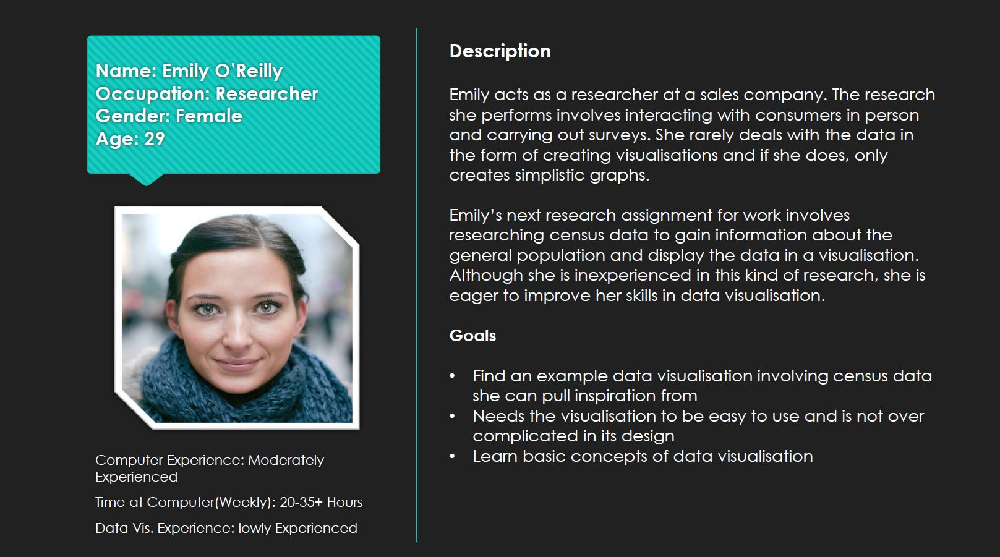
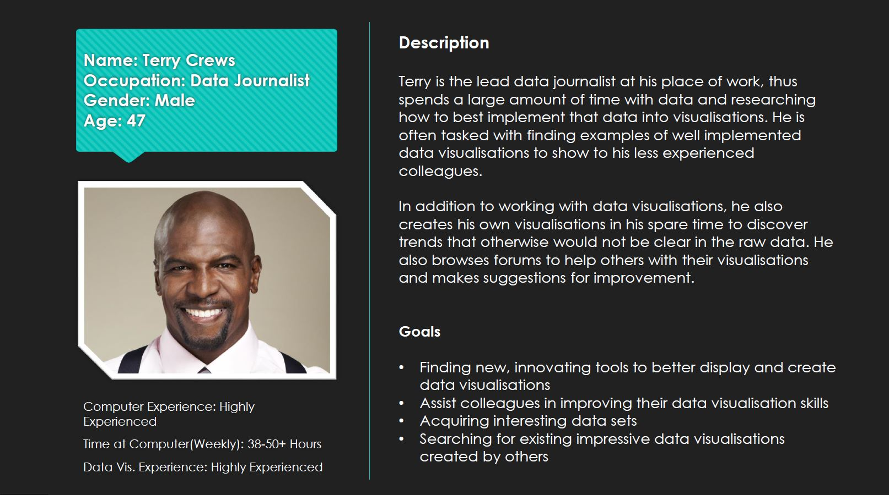
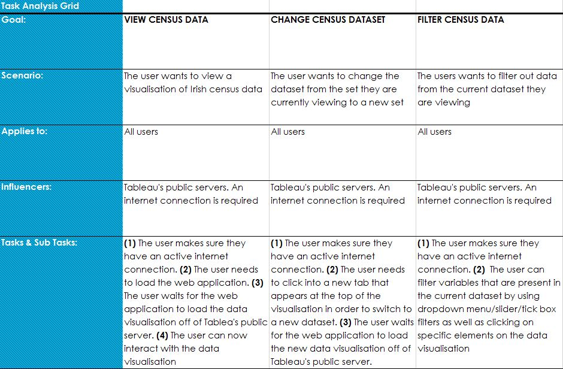

PROTOTYPING & USER ANALYSIS
Census Ireland Prototyping
 PROTOTYPE
PROTOTYPEThis project was split into four segments: creating personas, making a task analysis grid, creating a prototype in Axure and creating a demonstration video of the prototype.
The user analysis carried out involved creating personas that represented a novice user and an expert user of data visualisations. With the personas created, tasks that the users would need to perform on Census Ireland were determined and laid out on a task analysis grid. A prototype of Census Ireland was then created using Axure. Finally, a demonstration video of the prototype was recorded and edited using Camtasia.
From this project, I learned the process of creating personas for a particular product through researching examples of similar products already available and looking at what the products aim for users is. Tasks that both novice and expert users would need to do on the product were noted on an excel sheet. I then learned to use both the task analysis and personas to create the prototype of the product in Axure and upload it to Axure’s servers. I wrote a script of what to say in the demonstration video and learned to use Camtasia to cut the video into three segments before editing them together into a final cut.



 BACK TO MAIN
BACK TO MAIN  PROTOTYPE
PROTOTYPE